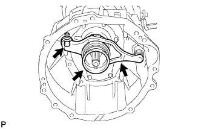
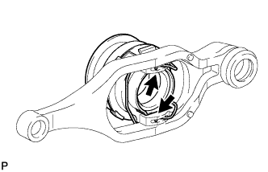

CLUTCH UNIT (for 1GR-FE) > REMOVAL |
| 1. REMOVE MANUAL TRANSMISSION ASSEMBLY |
Remove the manual transmission (Click here).
| 2. REMOVE CLUTCH RELEASE FORK SUB-ASSEMBLY |
 |
Remove the clutch release fork with the clutch release bearing from the transmission unit.
Remove the release fork support from the transmission unit.
 |
Remove the clip and release bearing from the clutch release fork.
| 3. REMOVE CLUTCH COVER ASSEMBLY |
 |
Put matchmarks on the clutch cover and flywheel.
Loosen each set bolt one turn at a time until spring tension is released.
Remove the 6 set bolts, and pull off the clutch cover.
| 4. REMOVE CLUTCH DISC ASSEMBLY |
| 5. INSPECT INPUT SHAFT BEARING |
 |
Turn the bearing by hand while applying force in the direction of the rotation.
If the bearing is stuck or difficult to turn, replace the input shaft bearing.